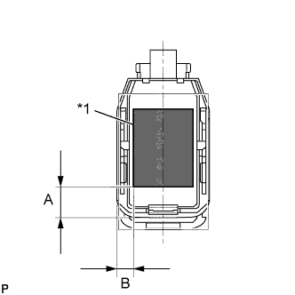
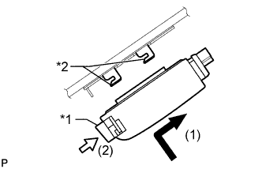

ДАТЧИК ДОЖДЯ > УСТАНОВКА |
| 1. УСТАНОВИТЕ ЛЕНТУ ДАТЧИКА ДОЖДЯ |
С помощью куска ткани или аналогичного средства очистите чувствительную часть датчика дождя.
|  |
Снимите отслаивающуюся пленку меньшего размера и прикрепите ленту датчика дождя на чувствительную часть датчика дождя, как показано на рисунке.
| Область | Измерение |
| A | 13,5 мм (0,532 дюйма) |
| B | 7,5 мм (0,295 дюйма) |
| *1 | Лента датчика дождя |
| 2. УСТАНОВИТЕ ДАТЧИК ДОЖДЯ |
С помощью куска ткани или аналогичного средства очистите ветровое стекло.
В случае установки нового датчика дождя или замены ленты датчика дождя:
Снимите отслаивающуюся пленку.
|  |
Введите в зацепление 2 направляющих и осторожно прикрепите датчик дождя к поверхности стекла, не допуская образования пузырьков воздуха между соприкасающимися поверхностями.
| *1 | Стопор |
| *2 | Направляющая |
Вставьте фиксатор.
Подсоедините разъем.
| 3. УСТАНОВИТЕ КРЫШКУ ДАТЧИКА ДОЖДЯ |
Введите в зацепление 2 захвата, чтобы установить крышку датчика дождя.